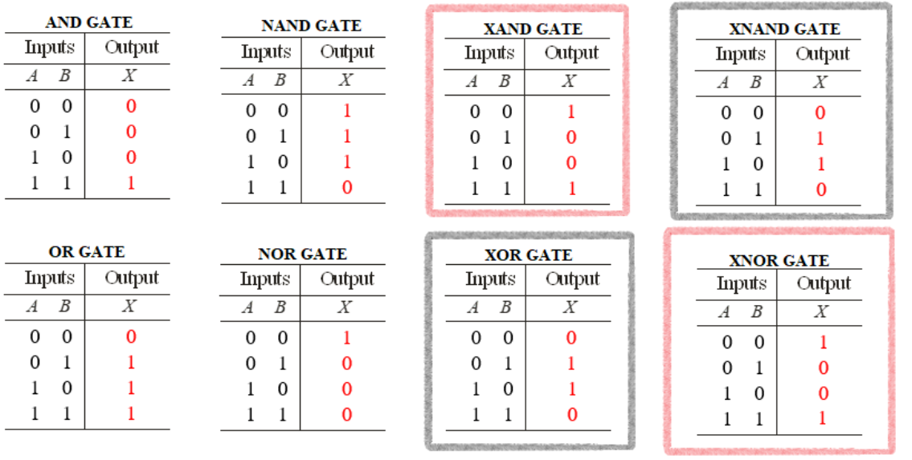

3 + 364 - 5-14 * 9 + 6/239.0What is Python? Python is an interpreted, object-oriented, high-level programming language with dynamic semantics. Its high-level built in data structures, combined with dynamic typing and dynamic binding, make it very attractive for Rapid Application Development, as well as for use as a scripting or glue language to connect existing components together. Python’s simple, easy to learn syntax emphasizes readability and therefore reduces the cost of program maintenance.
You can do any normal calculations, the same way you do in a calculator.
3 + 364 - 5-14 * 9 + 6/239.0Note that the basic order of operations – ie Parenthesis, Exponents, Division and Multiplication and Lastly Addition and Summation is followed. Note that for Division, Multiplication, Addition and Subtraction is done from left to right.
These are functions used to do basic math operations. They are subdivided into three categories:
Arithmetic Operators: used to carry out mathematical operations
| Operator | Expression | Description |
|---|---|---|
| + | x + y | Addition |
| – | x – y | Subtraction |
| * | x * y | Multiplication |
| / | x / y | Division |
| ** | x ** y | Exponent |
| % | x % y | Modulus (Remainder from division) |
| // | x // y | Integer Division |
5 + 3 #addition85 - 3 #Subtraction2-3 #Negation-35 * 3 #Multiplication155 / 3 # Division1.66666666666666675**3 # 5 raised to 31255 % 3 #the remainder of 5 divide by 3 is 225 // 3 #Integer Division. 3 goes into 5 1 time11 + 2 * (5 + 4) # Parenethesis first then multiply by 2 then add 119Relational Operators: Used to compare between two values.
| Operator | Expression | Description |
|---|---|---|
| < | x < y | Less than |
| > | x > y | Greater than |
| <= | x <= y | Less than or equal to |
| >= | x >= y | Greater than or equal to |
| == | x == y | Equal to |
| != | x != y | Not equal to |
3 < 10True3 < 2False3 > 2True3 <= 3True3 == 3True3 != 10TrueLogical Operators
| Operator | Expression | Description |
|---|---|---|
| and | x and y | AND |
| or | x or y | OR |
| not | not x | NOT ie negation |
| & | x & y | bitwise AND |
| | | x | y | bitwise OR |
| ^ | x ^ y | bitwise XOR |
| ~ | ~x | bitwise negation |
(3 < 10) and (4 > 5) #similar to 3 < 10 and 4 > 5False(3 < 10) or (4 > 5)Truenot (3 > 2)False3 < 4 < 5 # We can chain relational operations ie (3<4) and (4 < 5)TrueTruth tables:
| p | q | p AND q | p OR q | p XOR q |
|---|---|---|---|---|
| T | T | T | T | F |
| T | F | F | T | T |
| F | T | F | T | T |
| F | F | F | F | F |

\[ \scriptstyle{\begin{array}{c} \text{AND GATE :}~ A\cap B \\ \text{NAND GATE: } (A\cap B)^c\\ \text{OR GATE :}~ A\cup B \\ \text{NAND GATE: } (A\cup B)^c\\ \text{XOR GATE :}~ A\neq B= (A\cap B^c)\cup(A^c\cap B)\\ \text{NXOR GATE: } A = B\\ \end{array}} \]
Variables are used to store data, whose value can be changed according to our need. Unique name given to variable is identifier as it enables identify the data stored in memory.
Usually they are lvalues and rvalues, ie they can be on left side of the assignment operator and also be on the right side of the assignment operator.
One usually decides on the name to use for his/her variables. The rules followed in coming up with a variable name are:
Identifiers can be a combination of letters, digits, and underscore (_) ONLY.
It must start with a letter or an underscore. If it starts with a underscore, it cannot be followed by a digit.
Reserved words and Constants in python cannot be used as identifiers.
Variable and function names should be lowercase. Use an underscore (_) to separate words within a name. Generally, variable names should be nouns and function names should be verbs. Strive for names that are concise and meaningful.
# Good
day_one
day_1
# Bad
first_day_of_the_month
DayOne
dayone
djm1What is good? Bad? This is quite subjective. Some ground rules have been laid to try and have consistency in variable naming. There are many cases that have been proposed,
camelCase – The name starts with a lower case and then the next words are capitalized. eg dayOne
PascalCase – upper camelCase. ie starts with a capital letter. eg DayOne
snake_case – Underscore is used to separate the words. All words are in lowercase eg day_one
Of course you could use any of the above cases, as long as the variable is valid. Do not for example use kebab-case as it is not valid in python.
To assign a value to a variable, we use the = assignment operator. Note that = is an assignment operator. Its not a comparison operator. ie for comparison use ==. Assignment occurs from right to left. ie a statement like x = 1 means we assign the value 1 to a variable named x
x = 1.0 # assign 1 to x
x1.0x = x + 1 # add one to x and reassign x
x2.0x += 1 # increament the value of x in place.
x3.0x *= 2 # double the value of x in place
x6.0x -= 3
x3.0x /= 2
x1.5y = 'hello' # assign the literal string 'hello' to variable named yNote how x could be placed in both in the right hand side and left hand side of the assignment operator. Any value that can be on the right hand side of the assignment operator is considered to be a rvalue while those that can be on the left are considered to be lvalues. All literals are rvalues only. ie you cannot have a number like 5 on the left side of the operator. All basic data types are literals.
5 = 'x'cannot assign to literal here. Maybe you meant '==' instead of '='? (<string>, line 1)Note: there is a slight difference between x = x + y and x += y. The difference is only noticeable when we x is a mutable object. We will talk about this after learning about types.
The Python reserved words are a set of words that are used to denote special language functionality. No object can have the same name as a reserved word. The reserved words are case-sensitive and must be used exactly as shown. They are all entirely lowercase, except for False, None, and True.
assert elif from lambda or True
break else global lambda pass try
class except if None print while
continue finally import nonlocal raise with
def for is not return yield yield = 2assignment to yield expression not possible (<string>, line 1)Although function names eg sum type etc are not reserved, It is highly discouraged to use them as variable names. This is because no two objects can have the same name. Thus once you define a variable with a function name, the function is masked thus cannot be accessed.
a = 1,2,3,4,5
sum(a)15sum = sum(a)
sum15sum(a) # This line does not work anymore. Why? Because `sum` is no longer a functionTypeError: 'int' object is not callableIn order to make the sum function work again, you need to remove/delete the current variable sum, thus reverting back to the normal callable object
del sum # deletes the current object called sum
sum(a)15A data type is a collection of data values that are specified by a set of possible values, a set of allowed operations on these values, and/or a representation of these values as machine types. Data types are important because they tell a computer system how to interpret the value of data.
Python data types could be divided into two:
Basic Data types. – The simplest unit that could not be subdivided further.
Numeric – Integer, float, Complex
str
bool – True, False
None
Containers – Just as the name suggests, they contain are formed from a collection of the basic data types.
list
tuples
dictionary
Set
range
We can use the function type to determine the type of an object in Python. Lets look at each type:
This type has a single value. There is a single object with this value. This object is accessed through the built-in name None. It is used to signify the absence of a value in many situations, e.g., it is returned from functions that don’t explicitly return anything. Its truth value is false.
None
type(None)<class 'NoneType'>These are logical values True AND False. Internally stored as an integer with True given the value 1 and False given the value 0.
type(True)
type(False)These are zero, positive or negative whole numbers without a fractional part and having unlimited precision. Example include 0, 100, -10 . They also include binary, octal and hexadecimal numbers.
type(1) # Positive integer ie base 10 (0-9)
type(-10) # Negative integer ie base 10
type(0) # Zero regardles of the representation.
type(0b1)# Positive binary integer ie base 2 (0-1)
type(0o7)# Positive octal integer ie base 2. (0-7)
type(0xf)#Positive hexadecimal integer ie base 16 (0-9,a-f)These are numbers that contain a fractional part. ie non-whole numbers. For example 12.34, 3.14152 etc
type(12.34)<class 'float'>These are numbers that contain a real and imaginary part eg 3 + 2i . While we often use i to represent the imaginary part in mathematics and other programming, python uses the letter j. Thus a number that is immediately followed by a lower case letter j will be interpreted as a complex number.
3.21 + 2j(3.21+2j)type(3+2j)<class 'complex'>This is a representation of anything else that is not a number. Must be in quotes. Either single or double. eg names, string, sentences etc
"hello"'hello'type('a')<class 'str'>Though str is a basic type, it can also be thought of as a container. This is because a str is made p of individual characters, although python does not contain char type. To access the individual characters in str we use the extraction operator [].
string_one = "hello world"
string_one[1] #the second character'e'string_one[-1] # the last character'd'string_one[1:-1] # from the 2nd character to the second last'ello worl'string_one[1:-1:2] # from the 2nd to 2nd last by 2.'el ol'str are immutable. ie cannot be changed once created.
Note that we can explicitely convert from one type to the other by calling the respective data type function.
Eg
bool(10) # from Int to bool
bool('True') # from str to bool
bool(0) # from numeric to bool
str(False) # from str to bool
str(123) # from integer to str
str(123.5) # from float to str
int(True) # from bool to int
int(123.5) # from float to int. Note that the fractional part is dropped
int('1234') # from str to int
int('1001',2) #from str to int but base 2
int('abc', 16) # from str to int but base 16
float("1234.567") # from str to float
complex(2)# from int to complex
complex(2,3)# including real and imaginary partsTo call a function, we write the function name, then an opening parenthesis will all the necessary arguments separated by commas, then we close the parenthesis. This is the common way to call a function in almost all high level languages, ie C, C++, Java, JavaScript, R etc
Note that bool will transform anything other than 0 to True. Only a 0 will be converted to False.
Another important lesson is that while we can convert from one type to another, there is a hierarchy. The hierarchy is as given above, ie None, bool, int, float, complex, str. For a complete python data types hierarchy, click here
The items of a tuple are arbitrary Python objects. These objects are in a sequence separated by commas. Once created, the objects within the tuple cannot be changed, thus tuples are immutable.
7,2,9.4 # Sequence separated by a commas
(1,2.67, 'hello', True, None, 3+29j) # used parenthesis (Adviced to use this)
1, # A singleton tuple. ie tuple with one element
(1,) # same as above
() # An empty tuple
(1,2,3), 4, [5,6] # A tuple containing another tuple, a digit and a list
((1,2,3), 4, [5,6]) # Same as aboveWe could create a variable my_tuple and print it.
my_tuple = (1,2.67, 'hello', True, None, 3+29j)
my_tuple(1, 2.67, 'hello', True, None, (3+29j))To access elements in my_tuple we use the extraction operator [].
my_tuple[0] # the first element1my_tuple[1] # the secont element2.67my_tuple[-1] # the last element(3+29j)Lets try changing the first part of the tuple
my_tuple[0] = 12TypeError: 'tuple' object does not support item assignmentNote that we cannot mutate the object.
** Depending on the nature of an object, ie whether mutable or not, the extraction operator can also be used to mutate part of the object.
Almost similar to tuple, with the distinction being that lists are mutable. They are created using brackets rather than parenthesis.
[7,2,9.4] # Sequence separated by a commas
[1,2.67, 'hello', True, None, 3+29j]
[1] # A singleton list. ie list with one element
[] # An empty list
[[1,2],(1,2)] #a list containing another list and a tuplemy_list = [1,2.67, 'hello', True, None, 3+29j]
my_list[1, 2.67, 'hello', True, None, (3+29j)]my_list[0] = 12
my_list[12, 2.67, 'hello', True, None, (3+29j)]While we were unable to mutate the tuple, that was not the case with the list.
We could determine the number of elements in a str, tuple, list, using the len function
len(my_list)6We earlier mentioned that there exists a difference between x = x+y and x +=y. Check out here for more information
Think of this as a list of unique elements. The difference is that the elements are not ordered. ie, While in a list each element has an associated index to it, in a set, the elements are not associated to an index. The elements are unordered. They cannot be indexed by any subscript. However, they can be iterated over, and the built-in function len() returns the number of items in a set. The elements within a set must be hashable. Note that all immutable object are hashable. Thus a set could contain a literal, tuples but cannot contain a list. Hashable objects are objects that could be passed through the hash function to produce a unique value that identifies the object.
Common uses for sets are fast membership testing, removing duplicates from a sequence, and computing mathematical operations such as intersection, union, difference, and symmetric difference. We use curly braces to create a set.
{1,2,3} #set of 3 elements
{(1,2,3), 1,2,3} # set containing a tuple
{[1,2], (1,2,3)}# ERROR!!! a list is not hashable
x = {1,2,3}
x[0] # ERROR!! cannot be indexed!!We could use the set function to generate a set from a sequence of hashable objects.
set([1,2,3]) # get a set from a list{1, 2, 3}Example: Obtain unique values from the list x below
x = [1,5,6,3,3,3,3,2]
set(x) # unique values{1, 2, 3, 5, 6}The sets created by the function set or even {} are mutable. ie they can be changed
x = {1,2,4}
x.add(3) # add element 3
x{1, 2, 3, 4}To obtain an immutable set we use the function frozenset.
y = frozenset({1,2,3})Take note that sets cannot contain duplicates.
{1,1,1,1,2,2,3,6,6,6,7,5,'hello','hello'}{1, 2, 3, 5, 6, 7, 'hello'}Note that since {} is also used to create dictionaries, an empty set is created by calling set(). {} on the other hand creates an empty dictionary
These represent finite sets of objects indexed by nearly arbitrary values. They contain a pair of key:value where the key is a hashable object. They are created using the {} operator. They are mutable.
{} # empty dictionary{}dict() # empty dictionary{}{1:2,2:3,'hello':'world', (1,2,3):'tuple', 'list' : [1,2,3]} {1: 2, 2: 3, 'hello': 'world', (1, 2, 3): 'tuple', 'list': [1, 2, 3]}Note that we cannot use a list as a key as it is not hashable.
To get a value from a dictionary, we use the [] operator
d = {1:2,2:3,'hello':'world', (1,2,3):'tuple', 'list' : [1,2,3]}
d[1] # 1 here does not mean the first object but rather object with key 12d['list'][1, 2, 3]Dictionaries preserve insertion order, meaning that keys will be produced in the same order they were added sequentially over the dictionary. Replacing an existing key does not change the order, however removing a key and re-inserting it will add it to the end instead of keeping its old place.
d[3] = 3 #add a value to d above
d{1: 2, 2: 3, 'hello': 'world', (1, 2, 3): 'tuple', 'list': [1, 2, 3], 3: 3}d[2] = 2 # change the value of key 2 to 2
d{1: 2, 2: 2, 'hello': 'world', (1, 2, 3): 'tuple', 'list': [1, 2, 3], 3: 3}We can create dictionaries from a list/tuple of tuples:
x = ('a',1),('b',2),('c',3) # tuple of tuples
dict(x){'a': 1, 'b': 2, 'c': 3}These are objects that can be called to produce a desired effect. eg a function is a callable. A function is an object containing multiple interrelated statements that are run together in a predefined order every time the function is called. We define a function using the def keyword. A function must return a value using the return keyword. If not provided, by default python will return None value.
A pseudocode showing function definition:
def function_name(parameter_one, parameter_two,...):
body echos
statement one
statement two
:
:
return return_valuedef greeting(): # A function with 0 parameters
print("Hello") # It prints 'Hello'
# return value not specified, thus returns None
greeting() # calling the greeting functionHelloA function with a defined parameter that prints to screen.
def greeting_name(name):
print("Hello" + name)
greeting_name(" Class")Hello ClassFunction to compute and return square of a number
def square(x):
return x**2
square(20)400Program to compute the are of a rectangle
def area(length, width):
area = length * width
return area
area(10, 6)60Other callable objects in python are classes. While we cannot create a new basic datatype, we can create other types by defining a new class. A class is a user-defined blueprint or prototype from which objects are created. Classes provide a means of bundling data and functionality together. Creating a new class creates a new type of object, allowing new instances of that type to be made.
Previously we talked of different relational Operators. Can we do that with containers? What about if we wanted to determine as to whether a container has a certain specific value in it. How will we tackle that.
First, as long as a class/type has the needed method, then the comparison can be done. eg most of these containers have an equality method.
We could use in operator to determine as to whether an element is in a given object.
We could use is operator to determine identity. ie as to whether two objects share the same memory address. ie just having two variables but in essence they are the same object. eg one object having two names.
string_one = "Hello"
string_two = "Hello, Good Morning."
string_three = string_twostring_two == string_one # Compare equality of stwo stringsFalsestring_one > string_two # How will the words be arranged in a dictionary?Falsestring_one in string_two # Does string 2 contain string 1Truestring_one not in string_twoFalsestring_three is string_twoTruestring_one is NoneFalsestring_one is not NoneTrueNote that there is a distinction between is and ==. Two objects that were created differently could be equal yet not one object as they do not share the same memory. For example, One might be a copy of the other. Although a copy is exactly similar to the original, it is not the original.
For lists it only makes sense two compare equality. There is no logical reason as to say one list is less/greater than the other.
list_one = [1,3,5, None]
list_two = [1,2,3, [1,2]]
list_one == list_oneTruelist_one not in list_twoTrueNone in list_oneTrueMethods are functions that are associated with an object and can manipulate its data or perform actions on it. It can be accessed by the period . There are two types of methods: (1) class methods, (2) instance methods. Instance methods need a class instance and can access the instance through self. Class methods don’t need a class instance. They can’t access the instance ( self ) but they have access to the class itself via cls . Static methods don’t have access to cls or self .
capitalize format islower lower rindex strip
casefold index isnumeric lstrip rjust swapcase
center isalnum isprintable maketrans rpartition title
count isalpha isspace partition rsplit translate
encode isascii istitle removeprefix rstrip upper
endswith isdecimal isupper removesuffix split zfill
expandtabs isdigit join replace splitlines
find isidentifier ljust rfind startswith Examples:
my_string = "Hello World"
my_string.split() # splits the string into individual words['Hello', 'World']my_string.split('o') # Use 'o' as the delimiter instead['Hell', ' W', 'rld']my_string.find('o') # the first position where 'o' is4my_string.find('z') # -1 ie 'z' not in the string-1my_string.replace('o', '\N{winking face}')'Hell😉 W😉rld'a = {'o':'\N{winking face}','l':'\N{kissing face}'}
my_string.translate(str.maketrans(a))'He😗😗😉 W😉r😗d'my_string.translate(str.maketrans('elo', 'abc'))'Habbc Wcrbd'Read More on the string methods.
Check emoji unicode site to determine the unicode names
append count insert reverse
clear extend pop sort
copy index remove a = [1,2,3,4]
a.append(5) # add an element to end of the list
a[1, 2, 3, 4, 5]a.insert(2,6) # add 6 at position 2
a[1, 2, 6, 3, 4, 5]a.remove(3) # remove the first occurence of 3
a[1, 2, 6, 4, 5]a.extend([10,9,6,2,2,7]) # extend another list
a[1, 2, 6, 4, 5, 10, 9, 6, 2, 2, 7]a.count(2) # count the number of occurences of 23a.pop() # remove the last value.Also Return that value7a[1, 2, 6, 4, 5, 10, 9, 6, 2, 2]a.append([1,2,3]) # append a list
a # look at the distinction between append and extend[1, 2, 6, 4, 5, 10, 9, 6, 2, 2, [1, 2, 3]]add difference isdisjoint pop update
clear discard issubset remove
copy intersection issuperset union set_one = {10,5,7}
set_two = {10,1,3,6, 5, 7}
set_one or set_two # union of two sets{10, 5, 7}set_one.union(set_two) # same as above{1, 3, 5, 6, 7, 10}set_one and set_two # intersection of two sets{1, 3, 5, 6, 7, 10}set_one.intersection(set_two) #instance method. same as above{10, 5, 7}set.intersection(set_one, set_two) #class method. same as above{10, 5, 7}set_one - set_two # difference of two setsset()set_one.difference(set_two) #instance method same as aboveset()set.difference(set_one, set_two) #class method. same as aboveset()set_one.issubset(set_two)Trueclear get pop update
copy items popitem values
fromkeys keys setdefault dict_one = {'one':1, 'two':2}
dict_one.get('one') # instance method1dict.get(dict_one, 'one') # class method1dict_one.get('three') # Returns None as key 3 does not exist
dict_one | {'three':3} # union of two dictionaries{'one': 1, 'two': 2, 'three': 3}dict_one.update({'four':4})
dict_one.keys() # get the keysdict_keys(['one', 'two', 'four'])dict_one.values() # get the valuesdict_values([1, 2, 4])dict_one.items() # tuple of key, item to iterate over.dict_items([('one', 1), ('two', 2), ('four', 4)])Submit work here
Given a number x ,write a program that would obtain the digit immediately after the decimal point.
Input: 12.34
Output: 3
Input: 0.6123
Output: 6
Input: 213
Output: 0 Hint: Use math operations. eg modulus operator, integer division, multiplication etc
Given a number x and position, write a program that would obtain digit at the specified position. In this exercise we will assume that positions to the left of the decimal points are positive while those to the right of the decimal point are negative.
Example:
Input: 612.34, pos = 2
Output: 6
Input: 612.34, pos = 1
Output: 1
Input: 612.34, pos = 0
Output: 2
Input: 612.34, pos = -1
Output: 3
Input: 612.34, pos = -2
Output: 4
Input: 612.34, pos = 4
Output: 0Hint: Use math operations. eg modulus operator, integer division, multiplication etc.
Extra: What would change if the positions to the left were given as negative while those to the right as positive?
A simple function to determine maximum of two numbers:
def my_max(x, y):
return [x,y][y > x]Now we could run:
my_max(3, 10)10my_max(19, 3)19my_max(12,-4)12Take a good look at the code. Now write a function my_min that will take in two arguments and output the minimum of the two. Note that there are built in functions max and mint
Other ways of writing the max function could be:
def my_max1(x,y):
i = x > y
return x**i * y**(1-i)my_max1(3, 10)10my_max1(19, 3)19my_max1(12,-4)12\(xi + y(1-i)\) where \(i = x > y\)
Implement this method.
Could you explain as to how the two methods above are able to compute the maximum?
Write a function sign that outputs the sign of the input. ie a negative number has a sign of -1 and a positive number has 1
Input: -9
Output: -1
Input: 23
Output: 1Hint1: Use math operations. Recall \(x^0 = 1\). Select a good \(x\) and then think of what your exponent should be.
Hint2: Use math operations. Use a logical \(x\) and the expression \(2x - 1\)
Write a program absolute that returns the absolute value of a number. Hint: Use the sign function you wrote in question 4.
Input: -9
Output: 9
Input: 23
Output: 23Write a program cbrt to compute the cuberoot: Hint \(\sqrt[3]{x} = sign(x)\sqrt[3]{|x|}\) Where \(|\cdot|\) is the absolute function and \(sign(\cdot)\) is the sign function.
Input: -8
Output: -2
Input: 1
Output: 1
Input: 27
Output: 3Given a list, write a Python program called swap_first_last to swap first and last element of the list.
Examples:
Input : [12, 35, 9, 56, 24]
Output : [24, 35, 9, 56, 12]
Input : [1, 2, 3]
Output : [3, 2, 1]Given a list in Python and provided the positions of the elements, write a program swap to swap the two elements in the list. Hint: The program has 3 parameters.
Examples:
Input : List = [23, 65, 19, 90], pos1 = 1, pos2 = 3
Output : [19, 65, 23, 90]
Input : List = [1, 2, 3, 4, 5], pos1 = 2, pos2 = 5
Output : [1, 5, 3, 4, 2]Write a program that takes in two lists and outputs a sorted list containing all the elements in both lists
Examples:
Input: List1 = [1,2,3], List2 = [4,3,2]
Output: [1, 2, 2, 3, 3, 4]Write a program rep that takes in a list,str,tuple and outputs the elements of the input repeated n times.
Examples:
Input: [1,2], n = 4
Output: [1, 2, 1, 2, 1, 2, 1, 2]
Input: 'ab', n = 4
Output: 'abababab'
Input: (1, 2), n = 4
Output:(1, 2, 1, 2, 1, 2, 1, 2)
Input: [[1,2]], n = 3
Output: [[1, 2], [1, 2], [1, 2]]Write a program str_to_list that converts a string to a list of characters
Example:
Input: "Hello World!"
Output: ['H', 'e', 'l', 'l', 'o', ' ', 'W', 'o', 'r', 'l', 'd', '!']Write a program list_to_str that converts a list of characters into a string.
Example:
Input: ['H', 'e', 'l', 'l', 'o', ' ', 'W', 'o', 'r', 'l', 'd', '!']
Output: 'Hello World!'Convert the inputs below to their corresponding output:
Input: 'john is running'
Output: 'JOHN IS RUNNING'
Input: 'JOHN IS RUNNING'
Output: 'john is running'
Input: 'JoHn IS runNIng'
Output: 'John is running'
Input: 'JoHn IS runNIng'
Output: 'John Is Running'
Input: 'JoHn IS runNIng'
Output: 'jOhN is RUNniNG'Write a program that will take in a list/tuple of strings and output a sentence.
Examples:
Input: ['Python', 'is', 'an', 'amazing', 'language']
Output: 'Python is an amazing language'What string method is used to trim white spaces from the end and beginning of a word or sentence?
Given a string, write a program is_palindrome that will check at to whether the string is a palindrome. Note that a palindrome is a word or phrase that read the same backward as forward when spaces and cases are ignored. HINT: to reverse a string use string[::-1]
Examples:
Input: mom
Output: True
Input: Mom
Output: True
Input: Nurses run
Output: True
Input: mommy
Output: FalseWhat is the difference between str.split and str.partition methods?
Rounding numbers is a task that occurs in every aspect of math. We would like to implement a function my_round such that we could round to the nearest ten, one, five, tenths, half, fifths etc. How can we go about this? The formula is simple. For any given number \(x\), we can round it to the nearest number \(y\) by:
dividing \(x\) by \(y\)
Obtain the integral part of the quotient
Determine whether the fractional part of the quotient is greater than \(0.5\). This should be a logical value.
add the logical value obtained in step 3 to the integral part in step 2
Multiply the sum by \(y\). This should be the needed result.
Implement the above procedure in a program called my_round
Test the function with the following inputs:
Input: x = 123.4656, y = 1
Output: 123
Input: x = 123.4656, y = 5
Output: 125
Input: x = 123.4656, y = 10
Output: 120
Input: x = 126.4656, y = 10
Output: 130
Input: x = 123.4656, y = 100
Output: 100
Input: x = 123.4656, y = 1000
Output: 0
Input: x = 123.4656, y = 0.1
Output: 123.5
Input: x = 123.4656, y = 0.01
Output: 123.47
Input: x = 123.4956, y = 0.01
Output: 123.5
Input: x = 123.4656, y = 0.001
Output: 123.466
Input: x = 123.4656, y = 3
Output: 123Cryptography is the process of hiding or coding information so that only the person a message was intended for can read it. The art of cryptography has been used to code messages for thousands of years and continues to be used in bank cards, computer passwords, and ecommerce.
A simple encode-decode can be made using maketrans and the translate methods. This is the simplest form of encryption. Note that in real life, none of these methods are used as this is too simple. An example below illustrates the encoding and decoding:
key = 'abcdefghijklmno'
value = '1234567890XYZDW'
my_table = dict(zip(key, value)) # What does zip do?
my_table{'a': '1', 'b': '2', 'c': '3', 'd': '4', 'e': '5', 'f': '6', 'g': '7', 'h': '8', 'i': '9', 'j': '0', 'k': 'X', 'l': 'Y', 'm': 'Z', 'n': 'D', 'o': 'W'}Encryption
word = 'Hello'
encrypted = word.translate(word.maketrans(dict(zip(key, value))))
encrypted'H5YYW'Decryption:
encrypted.translate(str.maketrans(dict(zip(value, key))))'Hello'Computers only understand 0s and 1s. Each Letter is thus stored in a integer. For data translation, ASCII is used. ASCII (American Standard Code for Information Interchange) is a standard data-encoding format for electronic communication between computers. It was the first major character encoding standard for data processing. ASCII is important because it gives all computers the same language, allowing them to share documents and files.
ASCII solves the problem of how to assign values to letters and other characters so that they can be translated back into letters when the file is read later. ASCII provides a standardized method for encoding each character numerically, ensuring that the same character is represented both ways across the communication channel.
ASCII is still relevant. Many devices (non-Windows) use only ASCII. Programming languages are ASCII. Unicode is really an extension of ASCII, so for English at least, Unicode is not necessary except for “fancy” stuff (that wouldn’t be on you’re keyboard).
ASCII was the first major character encoding standard for data processing. Most modern computer systems use Unicode, also known as the Unicode Worldwide Character Standard. It’s a character encoding standard that echos ASCII encodings.
To return a unicode point for a one-character string, we use the function ord
ord('A')65To get the character representation we use chr function:
chr(65)'A'Visit UNICODE PAGE and check that 65 corresponds to latin capital letter A. You do not need to know the table as there are over 60,000 unicode characters.
Before the evolution of modern computers, translation was used for encryption:
shared_key = 3 # shared between sender and receiver
message = "HI"
def cipher(x, key):
return chr(((ord(x) - 65) + key) % 26 + 65)
encrypted = cipher(message[0], shared_key) + cipher(message[1], shared_key)
encrypted'KL'Note how we were able to shift the letters in the message by 3 values. ie H -> K and I->L. If we do cipher('A', 3) we should get D try it out. chipher('A', 4) should give E
In this section we have used zip, chr and ord. Explain what each does. Give and example for each
Apart from the join method, what other method can be used to concatenate two strings together?
Try to write a program that would decipher the text
Encryption is complicated than simply translating form one letter to another. Lets show a simple example of how encryption works
private_key = 173
public_key = (5, 323) # Computed from the private_key
letter = "a"
encrypt_letter = ord(letter)**public_key[0] % public_key[1]
chr(encrypt_letter)'ñ'To decode the message back to a only the person with the private key can get the message:
chr(encrypt_letter ** private_key % public_key[1])'a'Notice that the whole process of RSA encryption relies on the algorithm that computes the public key pair from the private key. We will later on implement a simple RSA algorithm.
Comments
Comments are often important part of a program as they describe what each part of the program does. It is often necessary to echo them so as your code can be understood by someone else or even by yourself later on when reviewing it. In Python as in R and Julia, comments are preceded by a sharp/hash/tag/pound symbol ie
#Thus any line of code from the hash onwards is considered commented out and thus will not be parsed by the interpreter.